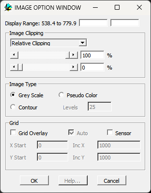

Geophysics plot options
These windows allow the user to alter the default display mode for geophysics images, or alter them once an image has been displayed.
The Gravity Display and Magnetics Display Windows may also be used to alter individual when the right mouse button is clicked in a geophysics image window.

| GROUP | NAME | FUNCTION |
|---|---|---|
| Image Clipping | Relative Clipping | Sets look up table clipping values relative to max/min within image |
| Absolute Clipping | Sets look up table clipping values relative to absolute values (useful when comparing different models) | |
| Max Clip | Clips the upper range of the data | |
| Min Clip | Clips the lower range of the data | |
| Image Type | Grey Scale | Displays image as grey scale raster |
| Pseudo Colour | Displays image as rainbow look up table raster | |
| Contour | Displays image as rainbow look up table contour map | |
| Levels | Range is divided evenly into this number of contour levels | |
| Grid | Grid Overlay | Turns on vector overlay of grid intersections |
| Auto | Uses automatic grid spacing (depends on image scale and shape) | |
| X,Y Start | Starting position of manualy defined grid | |
| Inc X,Y | Grid increments in X & Y direction | |
| Sensor | Displays locations of sensors over image, giving exact positions of potential-field calculations |
Noddy · open source under the MIT licence · Loop3D/noddy_qt